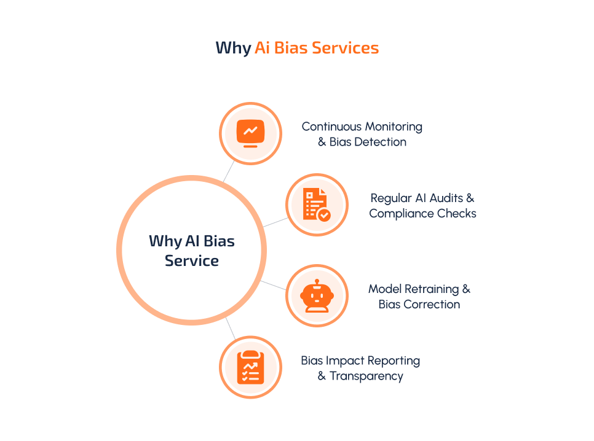
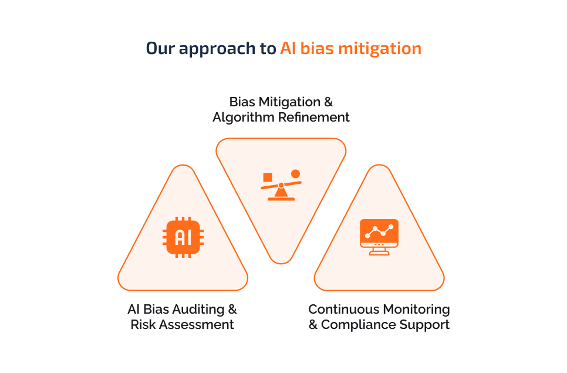
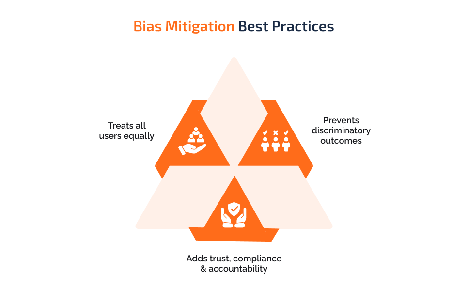

We couldn’t deny the fact that AI systems are becoming a crucial part of various industries, making decisions that have a high impact on lives. It may range from diagnosing medical conditions to recommending products, screening a candidate for a job, and so on. Businesses relying on AI must ensure their AI solutions provide unbiased and responsible outcomes. However, AI solutions bring biased results unknowingly due to the data they are trained on. It is a real-world issue currently faced by businesses, customers, and society.
Our comprehensive AI Bias Mitigation Services are all that you have to rely on if you find the AI solutions you have integrated with your organization bringing in biased results. With our service, your AI-powered solutions become more balanced and responsible. Whether you are developing a new AI solution or refining your existing one, we help you build technology that fosters fairness, inclusivity, and unbiased results for all users.
AI Bias Mitigation Services - Your Path to Responsible AI Innovation
AI bias is no longer just a technical flaw, as it may occur when ML models produce prejudiced results due to data limitations, human influence, and algorithmic flaws. Businesses, AI consulting services providers, and AI service companies should identify and rectify biases in AI models, ensuring fairness and equity.
As a leading AI Bias Mitigation company, we help businesses tackle AI bias in real-time. Our real-time bias detection and correction finds hidden biases before they harm your reputation. Going a step further, our AI experts refine AI models to be more transparent, inclusive, and capable of fairer decision-making. We use data auditing, bias-detecting algorithms, ethical AI frameworks, and continuous monitoring to make your AI solutions more ethical and reliable.
By integrating with us, we help you understand why AI bias occurs in your AI models and ensure they produce fair, ethical, and responsible outcomes.
Important of Considering AI Bias Mitigation Services
AI is the future of any business, and its decisions should not negatively impact anyone. The patterns, predictions, and decisions given by any AI model are valuable if and only if they are trained with historical data that does not hold any bias. When AI systems are unintentionally trained with biased data, it leads to legal risks, reputational damage, financial loss, and unreliable AI. Thus, the demand for AI regulations and governance is growing, and businesses rely on AI Bias Mitigation Services to ensure AI fairness and transparency.
For the following reasons, businesses can consider AI Bias Mitigation Services:
1. Strengthen brand reputation
2. Enhance fairness and inclusivity
3. Improve compliance and risk management
4. Increase trust and customer base
5. Optimize AI performance
As an AI Bias Mitigation Services provider, we help businesses address AI bias to gain trust and a competitive advantage in the digital landscape.
AI Bias Services for Ethical AI Development and Trust Building
Businesses keep expanding every now and then, as do data, patterns, and user behavior. Hence, AI bias changes over time and requires continuous fixing. By opting for our AI Bias Services, we take care of monitoring, assessing, and improving your AI models to keep them fair, transparent, and ethical.
To ensure long-term AI fairness,
We use our real-time AI monitoring system to track AI decisions, detect biases, and flag them before they become a serious problem for the company.
We conduct regular AI audits to review AI decisions and find hidden biases. Besides, with compliance checks, we ensure the AI model is legal and follows ethical standards.
As AI models learn from new data, we fine-tune algorithms, recalibrate models, and improve data diversity.
With our detailed bias impact and transparency report, we help businesses understand how AI decisions impact them and where improvements are required. Thus, businesses can build trust with customers and make informed choices for ethical AI agent development.

How AI Mitigation Services Prevent Biased Outcomes
An AI model delivers biased results due to wrong or poor-quality data, incomplete training, or flaws in the algorithm. Our AI Mitigation Services use a proactive approach that eliminates bias before it starts. Thus, we help businesses create AI systems that provide unbiased results.
We meticulously follow the process below to ensure unbiased AI results.
AI is only as good as the data it learns from. Hence, we focus on data-first bias prevention and remove bias during training. Thus, we choose diverse data sources to ensure fair representation.
At times, even high-quality data may create bias due to how it is processed. Hence, we fine-tune algorithms and use fairness-focused AI models to reduce discrimination. We also test AI under different conditions to ensure it delivers fair results.
The rules and regulations evolve along with AI. Hence, we help businesses using AI solutions comply with regulations like GDPR, EEOC, etc. By continuously evaluating AI, we ensure it remains compliant and trustworthy.
AI solutions need to be constantly monitored to ensure their outcomes are fair. We use automated tools to detect bias in AI decisions. In addition, we monitor AI performance via a dashboard that provides real-time insights. With predictive analytics, we ensure biases are fixed before they become a problem.
How Our AI Bias Mitigation Company Helps You Build Responsible AI
Artificial Intelligence is reshaping businesses and how they operate, deliver results, and make better decisions. Without constant monitoring, any AI solution inherits biases that lead to unfair, unethical, and harmful results. As a trusted AI Bias Mitigation Company, we detect, analyze, and eliminate bias in your AI systems to ensure they operate and deliver unbiased and transparent results.
We have a team of AI experts, data scientists, and ethical AI consultants who help businesses identify and correct biases, build your own AI solutions that meet ethical global standards, and provide ongoing monitoring to ensure AI-driven solutions remain unbiased for the long term.

By working with us, you are ensuring your AI system treats users fairly and meets ethical AI standards and regulations.
Strengthening AI Systems with Bias Mitigation Services
AI bias is common, and we can expect it to occur at any stage of AI development, from data collection to model training and deployment. To better handle this issue and provide unbiased results from AI systems, as a reliable Artificial Intelligence development company, we provide comprehensive yet tailor-made bias mitigation services to ensure your AI models operate with fairness, accountability, and accuracy.
With our expertise, we work across various domains, providing customizable solutions that align with your business standards, regulatory requirements, and ethical considerations.
Step 1:
We conduct preemptive bias identification to detect potential biases even before deployment. By eliminating bias at the data level, we prevent discrimination before it enters the AI system. This includes:
- Data audits and analysis
- Source verification
- Data balancing
Step 2:
Bias occurs when AI models process data. Hence, we embed ethical safeguards to refine AI model training. This includes:
- Bias-aware algorithm design
- Multi-objective optimization
- Testing in diverse scenarios
Step 3:
AI bias can appear even during real-time decision-making. We mitigate bias during the deployment stage to ensure your AI remains unbiased and fair. Our mitigation involves:
- Monitoring live AI interactions
- Explainable AI integration
- Ethical AI frameworks
Step 4:
AI bias arises due to industry challenges, and our customized approach ensures your AI follows ethical practices. We provide tailored solutions for healthcare, finance, retail, e-commerce, and human resources.
Step 5:
As bias mitigation isn't a one-time fix, we provide continuous monitoring to help businesses maintain trust, credibility, and ethical AI innovation. Thus, we offer businesses:
- Regular AI audits
- Compliance tracking
- Model retraining and updates
In the ever-evolving digital landscape, opting for bias mitigation is becoming essential. With our bias mitigation service, we ensure your AI systems serve all the users responsible.
Why Responsible AI Matters - Mitigating Bias & Ensuring Fairness
AI integration has become the most common practice among businesses. While this advanced technology is transforming industries, it may produce biased results if not designed carefully. Hence, developing responsible AI is important as it ensures this technology operates fairly, ethically, and transparently.
Being one of the top AI companies in the market, we practice responsible AI integration and prioritize bias mitigation. With our end-to-end approach, we ensure that your AI systems undergo careful analysis at each stage of their development, from design to deployment and beyond, for unbiased outcomes.

Best Practices for Building Unbiased and Ethical AI Systems should align with ethical principles and must not cause harm or discrimination. By embedding AI ethics at the core of AI development, businesses can prevent biased AI behavior.
Since AI models learn from historical data, there is a high chance of them being unethical, leading to biased AI decisions. Hence, organizations should conduct audits to ensure the data represents all users.
Bias occurs in AI algorithms; thus, businesses should implement bias-aware training, adversarial debiasing, and algorithmic explainability tools to ensure AI solutions are reliable and unbiased.
AI systems work differently during training, and their behavior may change after deployment. Therefore, it is essential to validate AI fairness in real time so organizations can prevent discrimination.
When AI systems discover new data, patterns, and user behaviors, they may incorporate biased data. This can be overcome with continuous monitoring, auditing, and compliance.
Future-Proof Your Business with Unbiased AI System Development
AI systems being unbiased depends on the data and algorithm they are trained on. In our biased AI system development process, we ensure that AI models are designed, trained, and implemented to be unbiased.
Take a look at our approach to building AI-powered system applications that are ethical, transparent, and foster fairness.
- We embed fairness principles at the design level to ensure AI models operate without biases.
- We choose a well-balanced dataset to ensure your AI models make fair and inclusive decisions.
- Our goal is to reduce AI bias effectively, and thus we integrate fairness evaluation metrics.
- We monitor AI performance and implement self-correcting mechanisms to prevent bias from creeping into decision-making.
If you want to build AI systems fairly from the start, choose us as your Bias AI System Development team and future-proof your business.
Technology Stack Used in Our AI Bias Mitigation
We use a cutting-edge technology stack in our AI Bias mitigation services to ensure AI systems foster fairness and transparency. Our approach integrates industry-standard tools, frameworks, and methodologies that drive your business towards growth and trust. Get to know the technology stack from the following table:
| Category | Tools & Platforms | Purpose |
|---|---|---|
| AI & Machine Learning Frameworks | TensorFlow & PyTorch, Scikit-Learn & XGBoost, Fairlearn & AI Fairness 360 (AIF360) | Enables fairness-aware AI model training and bias audits. |
| Data Processing & Bias Detection Tools | IBM AI OpenScale, SHAP (SHapley Additive Explanations), LIME (Local Interpretable Model-Agnostic Explanations), Google’s What-If Tool | Identifies and explains potential biases in datasets and model decisions. |
| Cloud & Infrastructure | Google Cloud AI & Vertex AI, Azure AI & Microsoft, Responsible AI Toolbox, AWS SageMaker Clarify | Ensures scalable AI model development with built-in fairness testing. |
| Compliance & Security Standards | GDPR & EU AI Act, ISO/IEC 24027, NIST AI Risk Management Framework | Ensures legal compliance, transparency, and ethical AI practices. |
Why Choose Us - Your Trusted Partner in AI Bias Mitigation
It is critical to choose the right and trusted AI Bias Mitigation Services to achieve unbiased AI results. Choosing us means you are partnering with a team committed to innovation and excellence. We empower businesses to mitigate bias in their AI systems and make them ethical, responsible, and transparent.
Check Out the Strong Reasons Why Businesses Trust Us:
- We have strong expertise in ML models, AI auditing frameworks, and interpretability techniques.
- Our team includes data scientists, AI ethicists, and compliance experts with expertise in bias detection and mitigation.
- We provide comprehensive, end-to-end mitigation solutions that analyze, address, and prevent bias at every stage of AI development.
- We offer customizable AI bias mitigation solutions tailored to your industry requirements.
- We prioritize AI ethics and social responsibility and are committed to building ethical and transparent AI.
- Your AI system will align with the latest advancements, as we are committed to a research-driven approach.
- We ensure ongoing monitoring and refinement, as bias mitigation must continue even after deployment.
AI Bias Mitigation - A Step Towards Fairness & Transparency
Businesses have started relying on AI systems for long-term growth, providing the best customer support, and driving innovation. Hence, mitigating AI bias is crucial to ensuring brand trust, compliance, and future-proofing AI solutions to stay ahead in the competitive landscape. Our motto at our AI Bias Mitigation Company is to deliver unbiased AI systems, ensuring businesses operate with fairness, integrity, and inclusivity. We use advanced technologies, stacks, and a continuous monitoring approach to deliver AI solutions that work for everyone, not just a few. Come take a step towards building a digital future that is more equitable by partnering with us.
Frequently Asked Questions
AI bias represents systematic and unfair discrimination involved in the AI systems that results in prejudiced outcomes. Addressing AI bias is important to ensure fairness, transparency, and ethical standards, and maintain public trust in AI technologies.
Bias Mitigation in AI models involves four important steps as follows: Identifying bias detection in data and algorithm, Data curation, Modifying models algorithmically, and Assessing AI systems regularly.
AI bias mitigation addresses three different types of biases and that includes Selection Bias which represents non-representative data samples, Confirmation Bias which represents favoring data based on pre-existing beliefs, and algorithm bias which was introduced by the algorithms themselves.
The exact cost of AI bias mitigation varies based on factors like the complexity of your AI system, the percentage of bias present, and the services required. Our AI mitigation company offers tailored solutions that fit your business needs and budget.
AI bias mitigation offers long-term benefits for businesses leveraging AI solutions with enhanced fairness, improved compliance, better decision-making, and building trust over brand and AI systems.